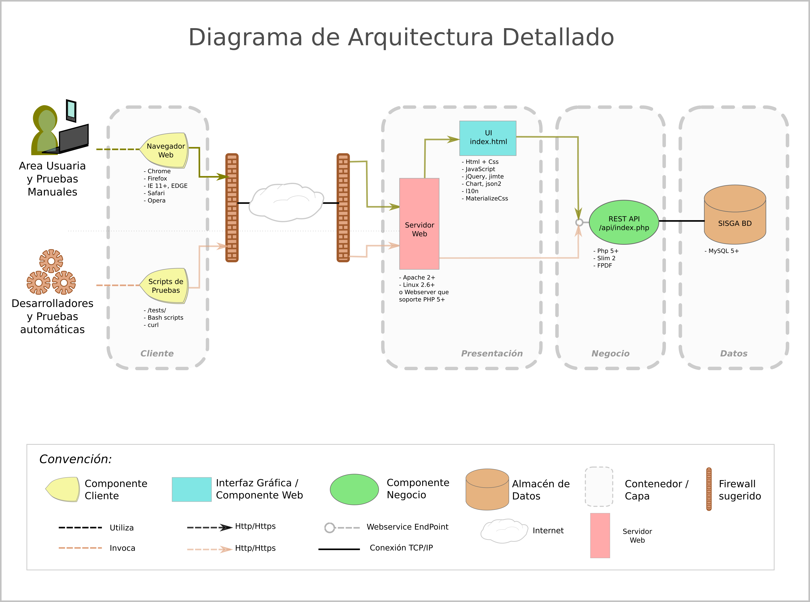
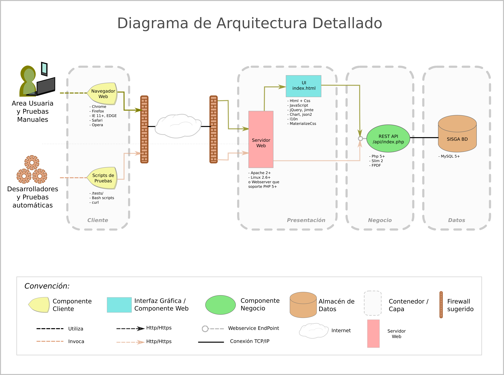
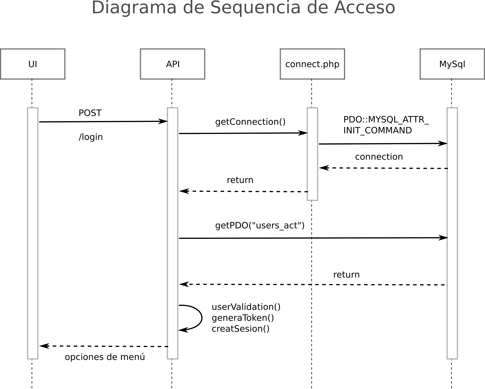
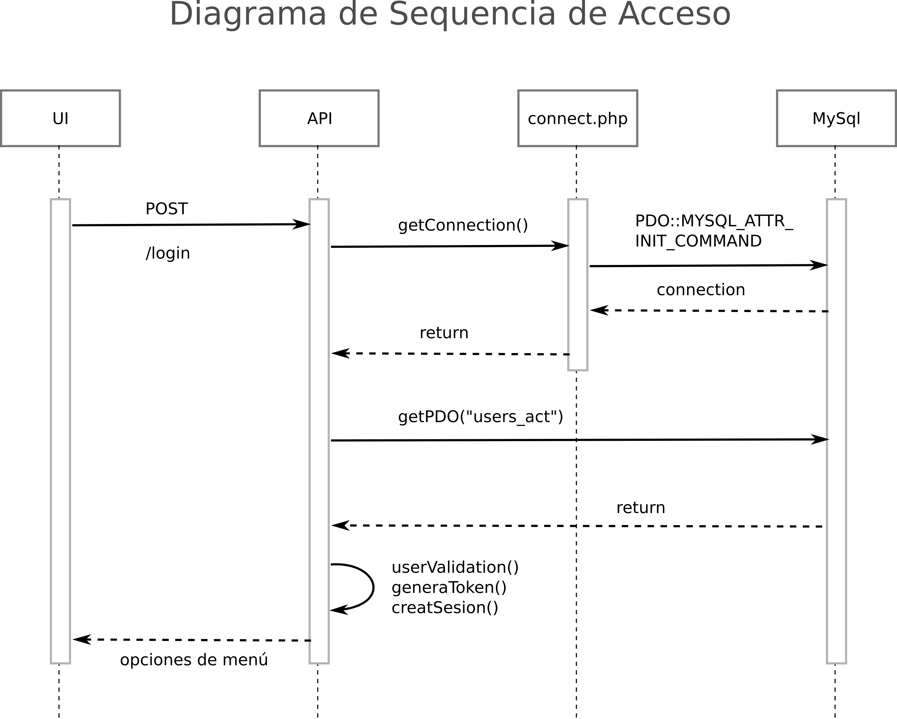

A continuación los diagramas de la arquitectura de la solución de software SISGA, junto con la correspondiente explicación sobre las decisiones técnicas tomadas.
 

Según los requerimientos identificados para este proyecto, se tomaron las siguientes decisiones de arquitectura y diseño de la solución:
- Arquitectura Web, bajo el stack LAMP (Linux, Apache, Mysql y PHP) ya que se desconoce el número máximo de usuarios del sistema, y se requiere que accedan desde cualquier ubicación. Además se requiere de un entorno muy fácil de asimilar por parte de los usuarios, si conocen como visitar una página de internet, ya tienen gran parte de la curva de aprendizaje recorrida.
- Como clientes tendremos un navegador web moderno (se recomienda Google Chrome) para el acceso mediante interfaz gráfica, y una suite de pruebas via scripts que utilizan el programa curl para realizar peticiones. Tanto la interfaz gráfica como la suite de pruebas se conectarán a un servicio web de tipo REST API. De esta forma ambos clientes usarán una misma API, que a su vez se conectará en el backend a una base de datos.
- La interfaz gráfica será desarrollada usando marcos de trabajo modernos, para enriquecer la experiencia de usuario. Las tecnologías a utilizar son HTML, Javascript, librerías javascript como jQuery (librería que simplifica el desarrollo con javascript), Chart (librería para gráficos), jimte (componente para conectar la interfaz gráfica con la API), jimte_table (componente para manejo de tablas con operaciones como ordenar, filtrar tablas con interfaz gráfica), l10n (para localización –traducción de mensajes a otro idioma-).
- La suite de pruebas está basada en el momento en scripts de Bash shell usando el programa curl, para peticiones GET, POST, PUT contra la API. Sin embargo, el mismo esquema puede ser replicado para otras suites en diferentes sistemas operativos e incluso el desarrollo en fases posteriores de un cliente nativo de alguna plataforma, por ejemplo, móvil.
- En el lado del Backend, capa de negocio, se eligió Php 5+ pues una de las plataformas en las que se consigue en mayor cantidad y a menor costo en los proveedores de hosting, lo mismo que amplio soporte en la comunidad, y se utilizará Slim que es un micro framework (solo para el manejo de las rutas) que redirecciona las peticiones de la API e invoca los scripts de base de datos correspondientes según las rutas que reciben cada petición. Adicionalmente librerías como jsPDF para la generación de actas en formato PDF, requerimiento de este proyecto.
- Para la Base de Datos se eligió MySQL 5+, que es una de las bases de datos también ampliamente disponibles en los proveedores de hosting actualmente.


 
